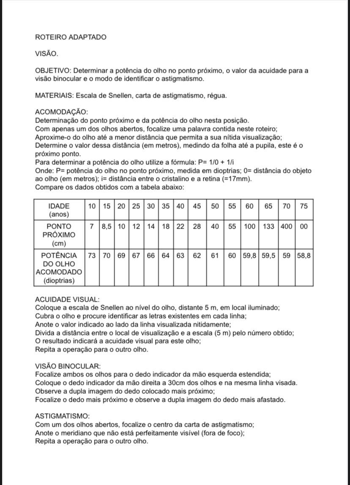
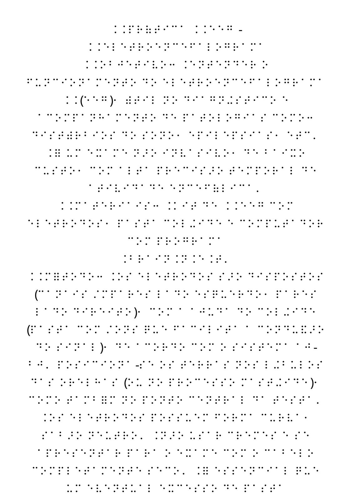
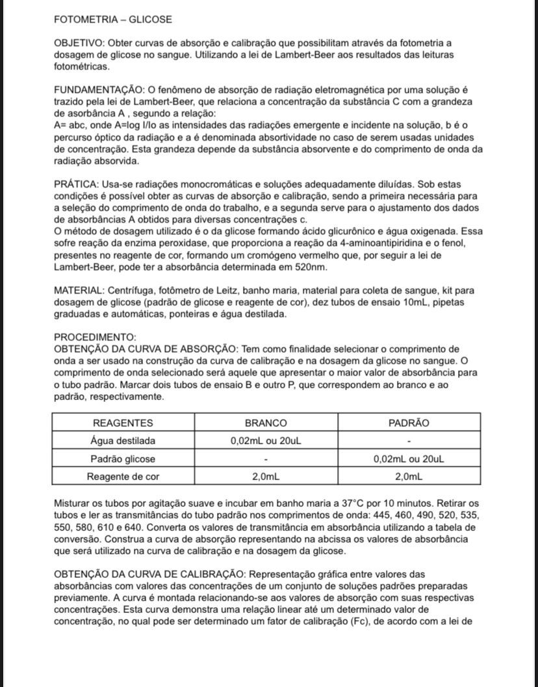
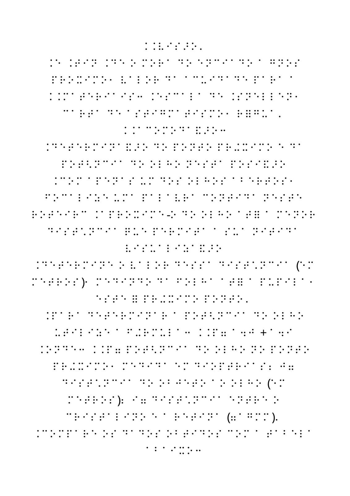
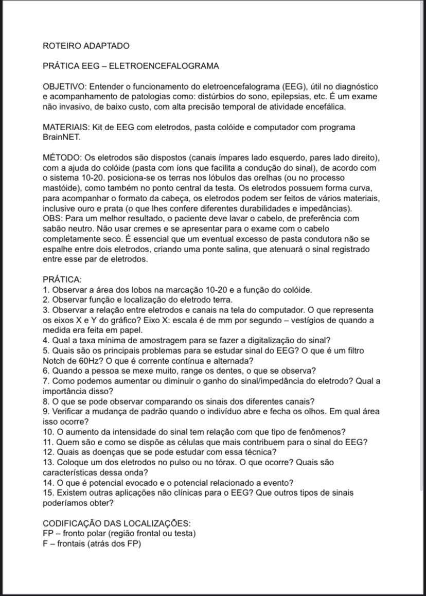
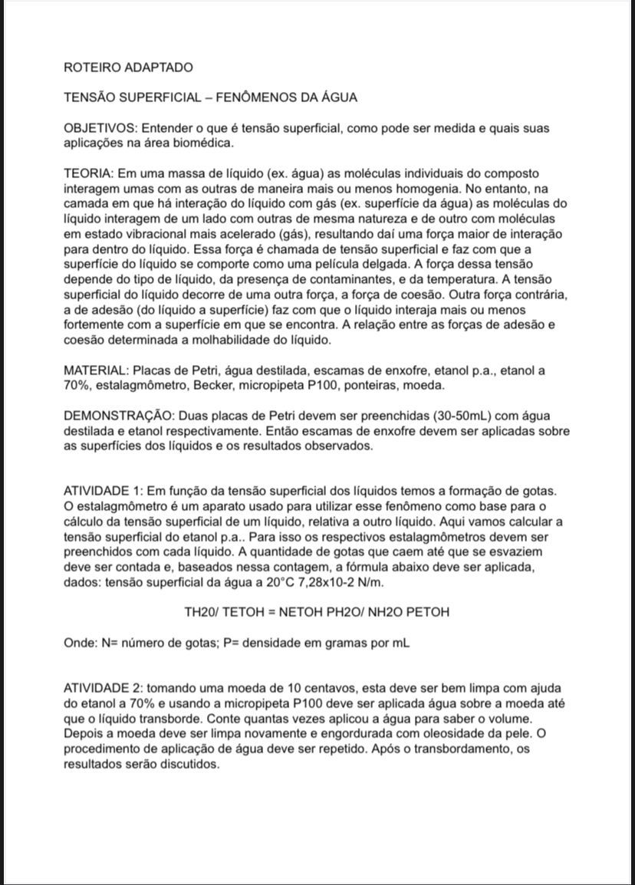
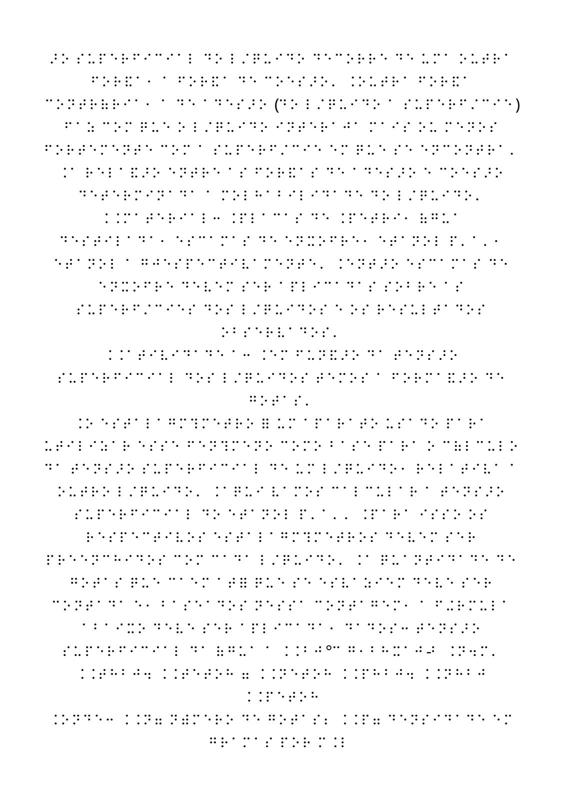

Materiais Didáticos em Braille
Conteúdos de biofísica adaptados para o sistema Braille, permitindo que estudantes com deficiência visual tenham acesso completo ao material didático. Nossos materiais incluem textos explicativos, diagramas táteis e exercícios práticos.
Comparativo Visual/Tátil de Conteúdos








Estarão disponíveis no laboratório de biofísica 📍